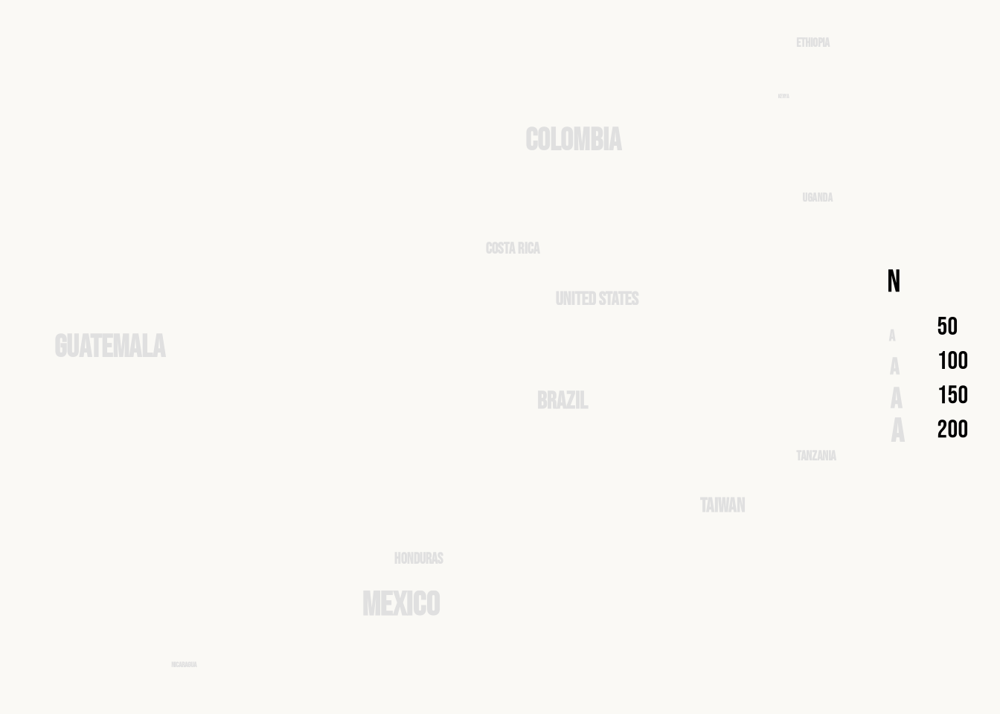
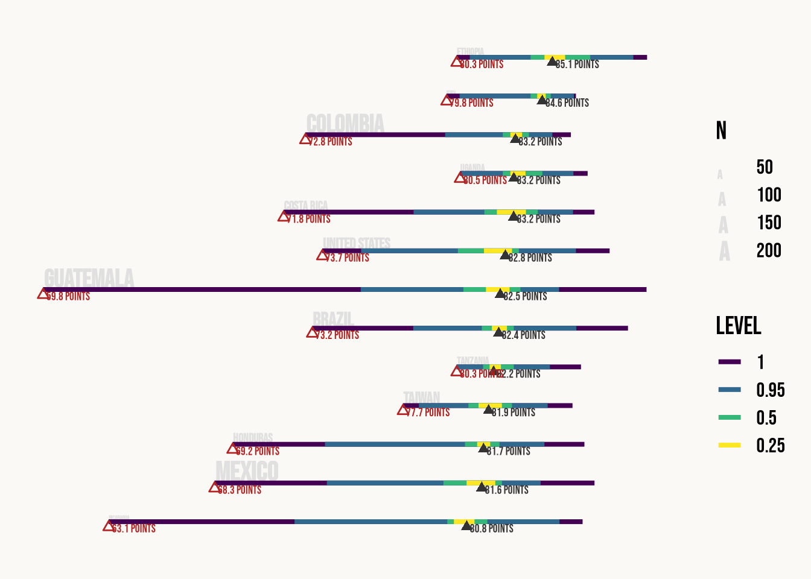
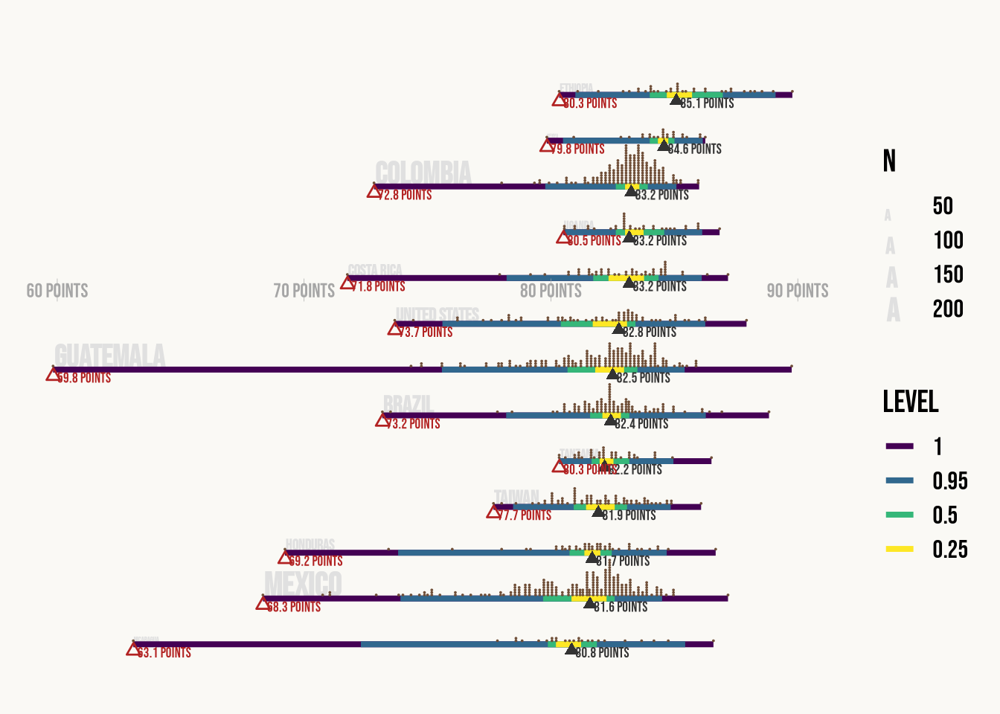
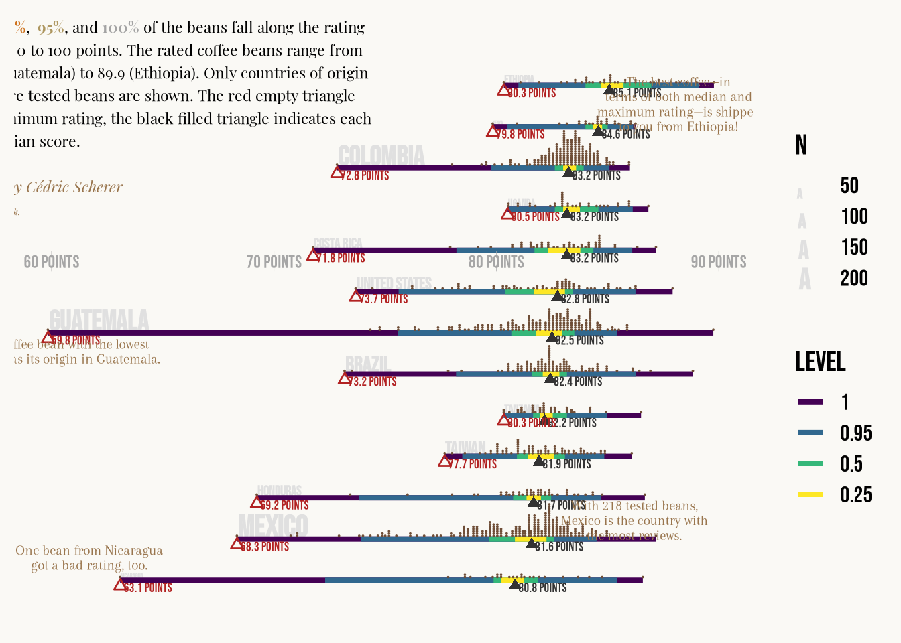
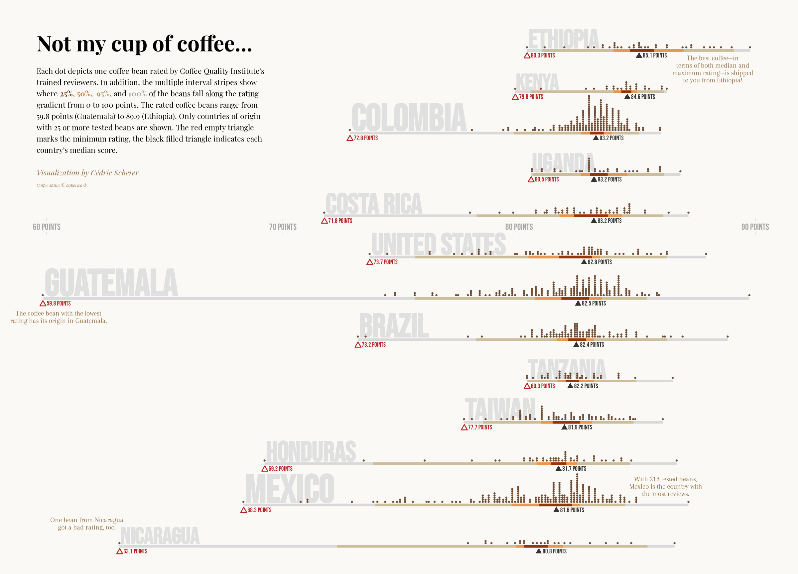

library(tidyverse)
library(ggdist)
library(grid)
library(ggtext)
library(ragg)Kahve Puanları Görseli — ggplot2 ile katman katman
Bu sayfada, TidyTuesday 2020, 28. hafta kahve puanları verisi üzerinde Cédric Scherer’in Not my cup of coffee… adlı görseli ggplot2 katmanlarıyla adım adım yeniden üretilecektir. Veri, kahve çekirdeklerine Coffee Quality Institute uzmanlarınca verilen 0–100 arası puanları içerir.
Paketler ve tema
tidyverse veri işleme ve ggplot2’yi getirir; ggdist puan dağılımını şerit (stat_interval) ve nokta (stat_dots) katmanlarıyla çizer; ggtext HTML biçimli metin kutusunu (geom_textbox), grid inç birimlerini, ragg yüksek kaliteli PNG çıktısını sağlar. Tema minimal ve Bebas Neue; panel çizgileri ile eksen yazıları kapatılıp zemin krem rengine boyanıyor.
theme_set(theme_minimal(base_family = "Bebas Neue", base_size = 16))
theme_update(
panel.grid = element_blank(),
axis.title = element_blank(),
axis.text = element_blank(),
plot.background = element_rect(color = NA, fill = "#faf9f5")
)Veri
Veri TidyTuesday deposundan read_csv ile okunuyor
df_coffee <- readr::read_csv('https://raw.githubusercontent.com/rfordatascience/tidytuesday/master/data/2020/2020-07-07/coffee_ratings.csv')
head(df_coffee)# A tibble: 6 × 43
total_cup_points species owner country_of_origin farm_name lot_number mill
<dbl> <chr> <chr> <chr> <chr> <chr> <chr>
1 90.6 Arabica metad p… Ethiopia "metad p… <NA> meta…
2 89.9 Arabica metad p… Ethiopia "metad p… <NA> meta…
3 89.8 Arabica grounds… Guatemala "san mar… <NA> <NA>
4 89 Arabica yidneka… Ethiopia "yidneka… <NA> wole…
5 88.8 Arabica metad p… Ethiopia "metad p… <NA> meta…
6 88.8 Arabica ji-ae a… Brazil <NA> <NA> <NA>
# ℹ 36 more variables: ico_number <chr>, company <chr>, altitude <chr>,
# region <chr>, producer <chr>, number_of_bags <dbl>, bag_weight <chr>,
# in_country_partner <chr>, harvest_year <chr>, grading_date <chr>,
# owner_1 <chr>, variety <chr>, processing_method <chr>, aroma <dbl>,
# flavor <dbl>, aftertaste <dbl>, acidity <dbl>, body <dbl>, balance <dbl>,
# uniformity <dbl>, clean_cup <dbl>, sweetness <dbl>, cupper_points <dbl>,
# moisture <dbl>, category_one_defects <dbl>, quakers <dbl>, color <chr>, …glimpse ile kısa özet görelim
glimpse(df_coffee)Rows: 1,339
Columns: 43
$ total_cup_points <dbl> 90.58, 89.92, 89.75, 89.00, 88.83, 88.83, 88.75,…
$ species <chr> "Arabica", "Arabica", "Arabica", "Arabica", "Ara…
$ owner <chr> "metad plc", "metad plc", "grounds for health ad…
$ country_of_origin <chr> "Ethiopia", "Ethiopia", "Guatemala", "Ethiopia",…
$ farm_name <chr> "metad plc", "metad plc", "san marcos barrancas …
$ lot_number <chr> NA, NA, NA, NA, NA, NA, NA, NA, NA, NA, NA, NA, …
$ mill <chr> "metad plc", "metad plc", NA, "wolensu", "metad …
$ ico_number <chr> "2014/2015", "2014/2015", NA, NA, "2014/2015", N…
$ company <chr> "metad agricultural developmet plc", "metad agri…
$ altitude <chr> "1950-2200", "1950-2200", "1600 - 1800 m", "1800…
$ region <chr> "guji-hambela", "guji-hambela", NA, "oromia", "g…
$ producer <chr> "METAD PLC", "METAD PLC", NA, "Yidnekachew Dabes…
$ number_of_bags <dbl> 300, 300, 5, 320, 300, 100, 100, 300, 300, 50, 3…
$ bag_weight <chr> "60 kg", "60 kg", "1", "60 kg", "60 kg", "30 kg"…
$ in_country_partner <chr> "METAD Agricultural Development plc", "METAD Agr…
$ harvest_year <chr> "2014", "2014", NA, "2014", "2014", "2013", "201…
$ grading_date <chr> "April 4th, 2015", "April 4th, 2015", "May 31st,…
$ owner_1 <chr> "metad plc", "metad plc", "Grounds for Health Ad…
$ variety <chr> NA, "Other", "Bourbon", NA, "Other", NA, "Other"…
$ processing_method <chr> "Washed / Wet", "Washed / Wet", NA, "Natural / D…
$ aroma <dbl> 8.67, 8.75, 8.42, 8.17, 8.25, 8.58, 8.42, 8.25, …
$ flavor <dbl> 8.83, 8.67, 8.50, 8.58, 8.50, 8.42, 8.50, 8.33, …
$ aftertaste <dbl> 8.67, 8.50, 8.42, 8.42, 8.25, 8.42, 8.33, 8.50, …
$ acidity <dbl> 8.75, 8.58, 8.42, 8.42, 8.50, 8.50, 8.50, 8.42, …
$ body <dbl> 8.50, 8.42, 8.33, 8.50, 8.42, 8.25, 8.25, 8.33, …
$ balance <dbl> 8.42, 8.42, 8.42, 8.25, 8.33, 8.33, 8.25, 8.50, …
$ uniformity <dbl> 10.00, 10.00, 10.00, 10.00, 10.00, 10.00, 10.00,…
$ clean_cup <dbl> 10, 10, 10, 10, 10, 10, 10, 10, 10, 10, 10, 10, …
$ sweetness <dbl> 10.00, 10.00, 10.00, 10.00, 10.00, 10.00, 10.00,…
$ cupper_points <dbl> 8.75, 8.58, 9.25, 8.67, 8.58, 8.33, 8.50, 9.00, …
$ moisture <dbl> 0.12, 0.12, 0.00, 0.11, 0.12, 0.11, 0.11, 0.03, …
$ category_one_defects <dbl> 0, 0, 0, 0, 0, 0, 0, 0, 0, 0, 0, 0, 0, 0, 0, 0, …
$ quakers <dbl> 0, 0, 0, 0, 0, 0, 0, 0, 0, 0, 0, 0, 0, 0, 0, 0, …
$ color <chr> "Green", "Green", NA, "Green", "Green", "Bluish-…
$ category_two_defects <dbl> 0, 1, 0, 2, 2, 1, 0, 0, 0, 4, 1, 0, 0, 2, 2, 0, …
$ expiration <chr> "April 3rd, 2016", "April 3rd, 2016", "May 31st,…
$ certification_body <chr> "METAD Agricultural Development plc", "METAD Agr…
$ certification_address <chr> "309fcf77415a3661ae83e027f7e5f05dad786e44", "309…
$ certification_contact <chr> "19fef5a731de2db57d16da10287413f5f99bc2dd", "19f…
$ unit_of_measurement <chr> "m", "m", "m", "m", "m", "m", "m", "m", "m", "m"…
$ altitude_low_meters <dbl> 1950.0, 1950.0, 1600.0, 1800.0, 1950.0, NA, NA, …
$ altitude_high_meters <dbl> 2200.0, 2200.0, 1800.0, 2200.0, 2200.0, NA, NA, …
$ altitude_mean_meters <dbl> 2075.0, 2075.0, 1700.0, 2000.0, 2075.0, NA, NA, …Veri hazırlığı
Sıfır puanlı satırlar atılır; her (tür, üretici, çiftlik, öğütme tesisi, ICO no, hasat yılı, derecelendirme tarihi) kombinasyonunun ortalaması alınır; en az 25 çekirdeği olan ülkeler tutulur; her satıra ülkenin medyan ve minimum değeri ile örnek sayısı eklenir; ülke adları kısaltılır; son olarak ülkeler medyana göre sıralanıp faktör yapılır ve y konumu bu sıradan türetilir.
df_coffee_p <-
df_coffee %>%
filter(total_cup_points != 0) %>%
group_by(species, owner, country_of_origin, farm_name, mill, ico_number, harvest_year, grading_date) %>%
summarize(total_cup_points = mean(total_cup_points, na.rm = T)) %>%
group_by(country_of_origin) %>%
filter(n() >= 25) %>%
mutate(
med = median(total_cup_points),
min = min(total_cup_points),
n = n(),
country_of_origin = case_when(
country_of_origin == "Tanzania, United Republic Of" ~ "Tanzania",
str_detect(country_of_origin, "United States") ~ "United States",
TRUE ~ country_of_origin
)
) %>%
ungroup() %>%
mutate(
country = fct_reorder(country_of_origin, med),
y = as.numeric(country) - .3 ## denemelerle bulunmus ince ayar (kaydirma)
)Yeni oluşan tabloya göz atalım
head(df_coffee_p)# A tibble: 6 × 14
species owner country_of_origin farm_name mill ico_number harvest_year
<chr> <chr> <chr> <chr> <chr> <chr> <chr>
1 Arabica acacia hill… Tanzania acacia h… acac… C30 2014
2 Arabica adam kline Guatemala <NA> <NA> 11/0052/0… <NA>
3 Arabica adriana tor… Mexico cre-leg … cre-… 0 2012
4 Arabica afca Tanzania mondul c… mond… C27 2014
5 Arabica afca Uganda <NA> buko… x 2012
6 Arabica afca Uganda <NA> grea… x 2012
# ℹ 7 more variables: grading_date <chr>, total_cup_points <dbl>, med <dbl>,
# min <dbl>, n <int>, country <fct>, y <dbl>glimpse(df_coffee_p)Rows: 1,087
Columns: 14
$ species <chr> "Arabica", "Arabica", "Arabica", "Arabica", "Arabica…
$ owner <chr> "acacia hills ltd", "adam kline", "adriana torres ri…
$ country_of_origin <chr> "Tanzania", "Guatemala", "Mexico", "Tanzania", "Ugan…
$ farm_name <chr> "acacia hills", NA, "cre-leg l-4", "mondul coffee es…
$ mill <chr> "acacia hills ltd", NA, "cre-leg beneficio", "mondul…
$ ico_number <chr> "C30", "11/0052/0538", "0", "C27", "x", "x", "x", "x…
$ harvest_year <chr> "2014", NA, "2012", "2014", "2012", "2012", "2012", …
$ grading_date <chr> "December 18th, 2014", "July 23rd, 2010", "September…
$ total_cup_points <dbl> 81.580, 82.500, 79.420, 83.330, 84.125, 84.170, 84.6…
$ med <dbl> 82.17, 82.50, 81.58, 82.17, 83.17, 83.17, 83.17, 83.…
$ min <dbl> 80.33, 59.83, 68.33, 80.33, 80.50, 80.50, 80.50, 80.…
$ n <int> 40, 181, 218, 40, 35, 35, 35, 35, 218, 218, 218, 218…
$ country <fct> Tanzania, Guatemala, Mexico, Tanzania, Uganda, Ugand…
$ y <dbl> 4.7, 6.7, 1.7, 4.7, 9.7, 9.7, 9.7, 9.7, 1.7, 1.7, 1.…Ülke özet satırları
Etiketler ve işaretler için her ülkeden tek satır (slice(1)) alınır; medyan (med) ve minimum (min) değerleri bu satırlardan okunur.
df_coffee_sum <-
df_coffee_p %>%
group_by(country) %>%
slice(1)
head(df_coffee_sum)# A tibble: 6 × 14
# Groups: country [6]
species owner country_of_origin farm_name mill ico_number harvest_year
<chr> <chr> <chr> <chr> <chr> <chr> <chr>
1 Arabica asociación … Nicaragua asociaci… bene… 017/191/4… 2014
2 Arabica adriana tor… Mexico cre-leg … cre-… 0 2012
3 Arabica beneficio s… Honduras bsr bene… 13-123-238 2014
4 Arabica cqi taiwan … Taiwan a shu sh… a sh… <NA> 2013/2014
5 Arabica acacia hill… Tanzania acacia h… acac… C30 2014
6 Arabica alexandra k… Brazil <NA> <NA> TEST TEST
# ℹ 7 more variables: grading_date <chr>, total_cup_points <dbl>, med <dbl>,
# min <dbl>, n <int>, country <fct>, y <dbl>Grafik içi dipnotlar
Açıklama metinleri elle konumlandırılmış bir tibble’da durur; \n satır sonları metinleri bloklara böler.
df_labs <-
tibble(
x = c(60.5, 88.2, 61.7, 86.2),
y = c(6.2, 12.2, 1.2, 2.1),
label = c("The coffee bean with the lowest\nrating has its origin in Guatemala.", "The best coffee—in\nterms of both median and\nmaximum rating—is shipped\nto you from Ethiopia!", "One bean from Nicaragua\ngot a bad rating, too.", "With 218 tested beans,\nMexico is the country with\nthe most reviews.")
)Katman katman grafik
Temel ve ülke adları
Grafik tek bir aes eşlemesiyle (x = puan, y = ülke konumu) başlar; ilk katman ülke adlarını minimum puan hizasından gri renkte, kalın ve örnek sayısına göre boyutlandırarak yazar: çekirdek sayısı fazla olan ülkelerin adı daha büyük görünür.
the_plot <- ggplot(df_coffee_p, aes(
total_cup_points,
y = y
)) +
## ülke adları
geom_text(
data = df_coffee_sum,
aes(
x = min,
y = y,
label = country,
size = n
),
family = "Bebas Neue",
color = "grey88",
fontface = "bold",
vjust = 0,
hjust = -0.01
)
the_plot
Aralık şeritleri ve işaretler
stat_interval puanların %25, %50, %95 ve %100 aralıklarını koyu-açık kahve tonlarında yatay şeritler olarak boyar. Dolu siyah üçgen medyanı, boş kırmızı üçgen minimumu gösterir; yanlarındaki metinler değerleri yazar.
the_plot <- the_plot +
## aralık şeritleri
stat_interval(
aes(y = y - .05),
orientation = "horizontal",
.width = c(.25, .5, .95, 1),
stroke = 0,
size = 1.4
) +
## medyan işareti
geom_point(
data = df_coffee_sum,
aes(x = med, y = y - .18),
shape = 17,
color = "grey20",
size = 2
) +
geom_text(
data = df_coffee_sum,
aes(
x = med + .16,
y = y - .11,
label = glue::glue("{round(med, 1)} points")
),
family = "Bebas Neue",
color = "grey20",
size = 2.5,
vjust = 1,
hjust = 0
) +
## minimum işareti
geom_point(
data = df_coffee_sum,
aes(x = min + .01, y = y - .19),
shape = 2,
color = "firebrick",
size = 1.9
) +
geom_text(
data = df_coffee_sum,
aes(
x = min + .17,
y = y - .11,
label = glue::glue("{round(min, 1)} points")
),
family = "Bebas Neue",
color = "firebrick",
size = 2.5,
vjust = 1,
hjust = 0
)
the_plot
Çekirdek noktaları ve eksen
stat_dots her bir çekirdeği tek nokta olarak dizer (quantiles = NA olduğu için özetleme yapılmaz). Eksen ise standart eksen yerine elle konumlandırılmış metin ve çizgi işaretleriyle çizilir.
the_plot <- the_plot +
## çekirdek noktaları
stat_dots(
quantiles = NA,
orientation = "horizontal",
normalize = "none",
scale = .87,
color = "#6f4e37",
fill = "#6f4e37"
) +
## eksen etiketleri
geom_text(
data = tibble(
x = seq(60, 90, by = 10),
y = 8.385,
label = glue::glue("{seq(60, 90, by = 10)} points")
),
aes(
x = x,
y = y,
label = label
),
inherit.aes = F,
family = "Bebas Neue",
color = "grey65",
size = 3.5
) +
geom_point(
data = tibble(
x = rep(seq(60, 90, by = 10), 2),
y = rep(c(8.55, 8.22), each = 4)
),
aes(
x = x,
y = y
),
inherit.aes = F,
color = "grey65",
shape = "|",
size = 1
)
the_plot
Açıklama kutusu ve dipnotlar
geom_textbox, HTML etiketli başlık ve açıklama metnini belirtilen genişlikte sarmalayıp sağ üst köşeye yerleştirir; dipnotlar ilgili ülkelere yakın konumlandırılır.
the_plot <- the_plot +
## açıklama kutusu
geom_textbox(
data = tibble(
x = 64.5,
y = 9.2,
label = "<b style='font-size:24pt;'>Not my cup of coffee...</b><br><br>Each dot depicts one coffee bean rated by Coffee Quality Institute's trained reviewers. In addition, the multiple interval stripes show where <b style='color:#6F2808;'>25%</b>, <b style='color:#CE711B;'>50%</b>, <b style='color:#AE9760;'> 95%</b>, and <b style='color:#A3A3A3;'>100%</b> of the beans fall along the rating gradient from 0 to 100 points. The rated coffee beans range from 59.8 points (Guatemala) to 89.9 (Ethiopia). Only countries of origin with 25 or more tested beans are shown. The red empty triangle marks the minimum rating, the black filled triangle indicates each country's median score.<br><br><i style='color:#99754d;'>Visualization by Cédric Scherer</i><br><i style='font-size:5pt;color:#99754d;'>Coffee stain:
© paperwork.</i>
"
),
aes(
x = x, y = y, label = label
),
inherit.aes = F,
family = "Playfair Display",
size = 3,
lineheight = 1.5,
width = unit(3.8, "inch"),
fill = NA,
box.colour = NA,
hjust = .5,
vjust = 0
) +
## dipnotlar
geom_text(
data = df_labs,
aes(x, y, label = label),
inherit.aes = F,
family = "Arapey",
color = "#99754d",
size = 2.8,
lineheight = .87
)
the_plot
Ölçekler, çizim ve kaydetme
Son katmanlar: x ekseni kırıkları ve etiketleri, şerit renkleri (scale_color_manual) ve ülke adı boyutu (scale_size). Grafik çizilir ve 12,5 × 9 inç boyutunda files/ klasörüne SVG olarak kaydedilir; dosyayı buradan indirip inceleyebilirsiniz (Bebas Neue, Playfair Display ve Arapey fontları bilgisayarınızda yüklü değilse tarayıcı yedek font kullanır).

the_plot <- the_plot +
scale_x_continuous(
breaks = seq(60, 90, by = 10),
labels = function(x) paste0(x, " points")
) +
scale_y_continuous(expand = c(0, 0)) +
scale_color_manual(
values = c("grey85", "#ccbe9b", "#e8984e", "#94350b"),
guide = F
) +
scale_size(
range = c(8.75, 15.5),
guide = F
)
the_plot
ggsave("files/2020_28_CoffeeRatings.svg", the_plot, width = 12.5, height = 9)Dosyayı indirip inceleyebilirsiniz: link